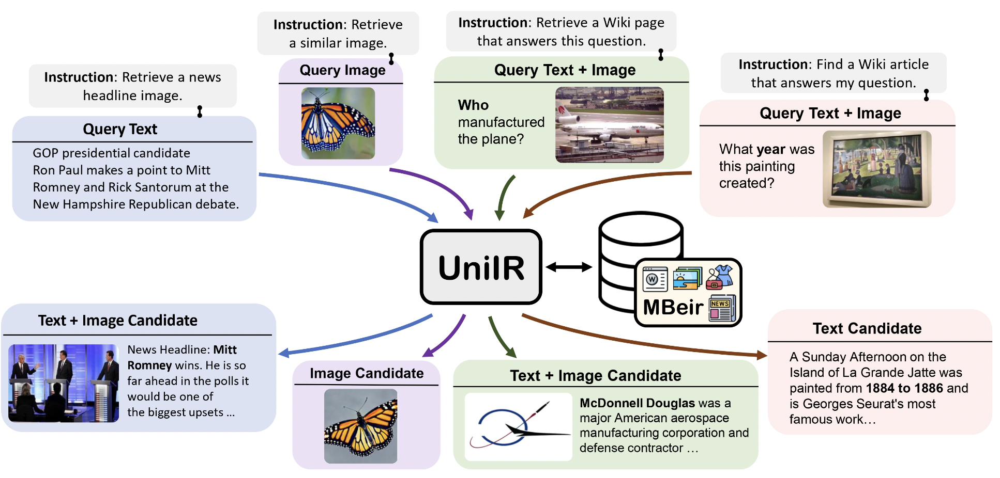
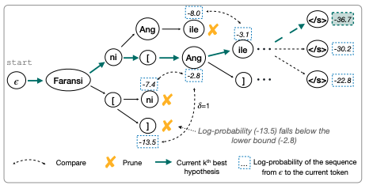
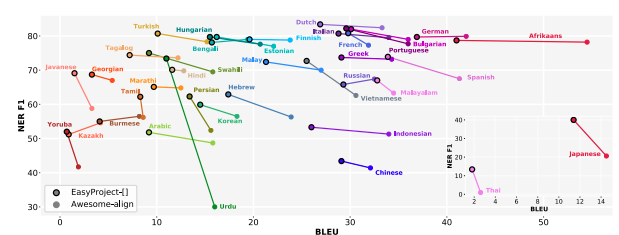
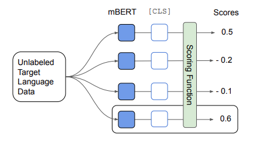
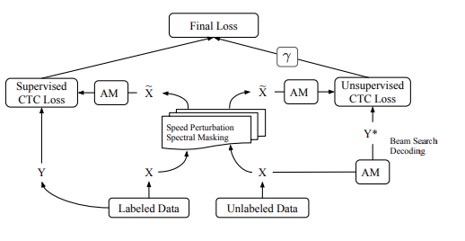

Can Pre-trained Vision and Language Models Answer Visual Information-Seeking Questions?
Yang Chen, Hexiang Hu, Yi Luan, Haitian Sun, Soravit Changpinyo, Alan Ritter, Ming-Wei Chang
EMNLP 2023, [arXiv], [Project Page], [Dataset]
Yang Chen, Hexiang Hu, Yi Luan, Haitian Sun, Soravit Changpinyo, Alan Ritter, Ming-Wei Chang
EMNLP 2023, [arXiv], [Project Page], [Dataset]
Open-domain Visual Entity Recognition: Towards Recognizing Millions of Wikipedia Entities
Hexiang Hu, Yi Luan, Yang Chen, Urvashi Khandelwal, Mandar Joshi, Kenton Lee, Kristina Toutanova, Ming-Wei Chang
ICCV 2023 (Oral), [arXiv], [Project Page], [Dataset]-

-
-

-

-

-

Hexiang Hu, Yi Luan, Yang Chen, Urvashi Khandelwal, Mandar Joshi, Kenton Lee, Kristina Toutanova, Ming-Wei Chang
ICCV 2023 (Oral), [arXiv], [Project Page], [Dataset]
UniIR: Training and Benchmarking Universal Multimodal Information Retrievers
Cong Wei, Yang Chen, Haonan Chen, Hexiang Hu, Ge Zhang, Jie Fu, Alan Ritter, Wenhu Chen
[arXiv], [Project Page]
Cong Wei, Yang Chen, Haonan Chen, Hexiang Hu, Ge Zhang, Jie Fu, Alan Ritter, Wenhu Chen
[arXiv], [Project Page]
Can Language Models be Instructed to Protect Personal Information?
Yang Chen*, Ethan Mendes*, Sauvik Das, Wei Xu, Alan Ritter
[arXiv], [Project Page]
Yang Chen*, Ethan Mendes*, Sauvik Das, Wei Xu, Alan Ritter
[arXiv], [Project Page]
Constrained Decoding for Cross-lingual Label Projection
Duong Minh Le, Yang Chen, Alan Ritter, Wei Xu
ICLR 2024, [OpenReview]
Duong Minh Le, Yang Chen, Alan Ritter, Wei Xu
ICLR 2024, [OpenReview]
Frustratingly Easy Label Projection for Cross-lingual Transfer
Yang Chen, Chao Jiang, Alan Ritter, Wei Xu
Findings of ACL 2023, [arXiv], [Demo], [Code]
Yang Chen, Chao Jiang, Alan Ritter, Wei Xu
Findings of ACL 2023, [arXiv], [Demo], [Code]
Model Selection for Cross-Lingual Transfer
Yang Chen, Alan Ritter
EMNLP 2021, [arXiv], [Code]
Yang Chen, Alan Ritter
EMNLP 2021, [arXiv], [Code]
Semi-supervised ASR by End-to-end Self-training
Yang Chen, Weiran Wang, Chao Wang
Interspeech 2020, [arXiv]
Yang Chen, Weiran Wang, Chao Wang
Interspeech 2020, [arXiv]
Work Experience
-
 Fall 2022, Spring 2023: Research Intern, Google Deepmind @ Seattle, WA
Fall 2022, Spring 2023: Research Intern, Google Deepmind @ Seattle, WA
Mentor: Hexiang Hu and Ming-Wei Chang
Multimodal LLMs and Retrieval model -
 Summer 2019: Applied Scientist Intern, Amazon Alexa @ Boston, MA
Summer 2019: Applied Scientist Intern, Amazon Alexa @ Boston, MA
Mentor: Weiran Wang and Chao Wang
Self-improving speech recognition model
Acknowledgement
-
I would like to thank Professor Karen Livescu and Professor Kevin Gimpel at TTIC for giving me the opportunity to start deep learning research in 2018.